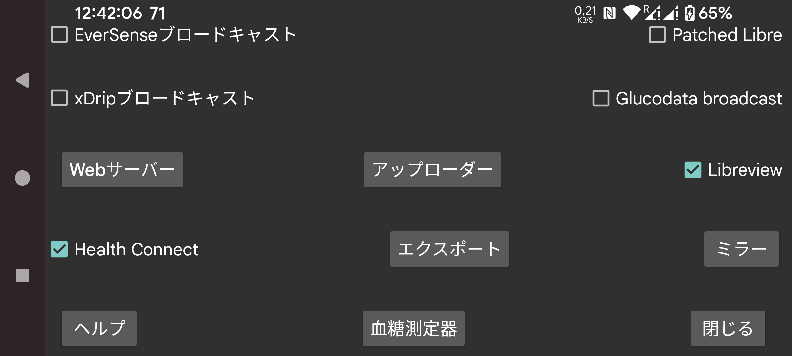

毎分の血糖値を Health Connect に送信します。これらの血糖値へのアクセスを他のアプリ、例えば Google Fit などに許可できます。他のアプリは Google Fit のデータにアクセスできます。
Libreview に接続して、FreeStyle Libre 2 と 3 の血糖値と記録を送信したり、FreeStyle Libre 3 センサーの有効化に使うアカウント ID を取得します。タッチして設定を変更できます。
Patched Libre ブロードキャスト自体には問題ありませんが、xDrip は Patched Libre ブロードキャストから受信した値を変更します。ユーザーがこのブロードキャストをこの方法でしか使わないため、このブロードキャストを削除する予定です。
xDrip が EverSense ブロードキャストから血糖値を受信する場合や、Juggluco の Web サーバーが Nightscout データソースとして使用される場合は値を変更しません。
もう 1 つの血糖ブロードキャスト。毎分の血糖値を xDrip に送信するために使用できます。xDrip では ハードウェアデータソース として「640G/EverSense」を設定する必要があります。
xDrip は 5 分に 1 値を要求するため、ほとんどの値を無視します。xDrip のソースコードを編集してこの制限を取り除けます。app/src/main/java/com/eveningoutpost/dexdrip/models/BgReading.java 内の 4 * 60 * 1000 を 55 * 1000 に変更し、次のようにします:
public static BgReading readingNearTimeStamp(long startTime)
{
long
margin = (55 * 1000);
return
readingNearTimeStamp(startTime, margin);
}
Patched Libre ブロードキャストに対する利点は、xDrip が血糖値を不明な方法で変換しないことです。
xDrip の「設定 → アプリ間設定 → ローカルブロードキャスト」でオンにしているのと同じブロードキャストを送信します。AndroidAPS のようなアプリがこれを受信します。元の xDrip ブロードキャストが 5 分ごとにブロードキャストしていたのと異なり、Juggluco はこのブロードキャストを毎分行います。
xDrip ブロードキャストと同じ機能を持つ新しいブロードキャスト。受信した血糖値を logcat に書き込むシンプルなサンプルアプリは Glucose broadcasts にあります。G-Watch でデータソースとして Juggluco を指定する場合、このブロードキャストをオンにする必要があります。
このブロードキャストを受信するアプリが表示されます。送信したいアプリにチェックを入れます。
xDrip ウォッチや一部の Nightscout アプリで使用できる Web サーバー。以前は xDrip Web サーバーと呼ばれていました。
Nightscout サーバーにアップロードします。
インターネット接続を介してすべてのデータを Juggluco の別のインスタンスに送信し、別の端末上に Juggluco のクローンを作成します。既存のデータは上書きされます。
データをファイルに保存します。